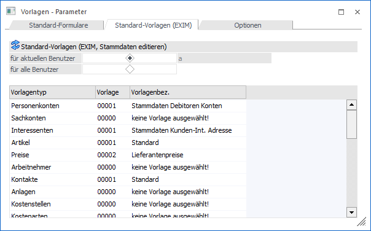
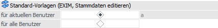
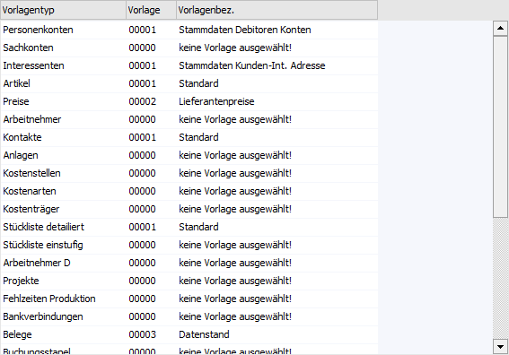

In diesem Register können Standard-Vorlagen für die meisten WinLine EXIM-Programme und das "Stammdaten editieren" hinterlegt werden.

Benutzer-Auswahl

Ø für Benutzer x / für alle Benutzer
Über diese Option kann eingestellt werden, für welche Benutzer die nachfolgenden Einstellungen gelten sollen.
ü für aktuellen Benutzer
Wenn die
Option "für Benutzer x" ausgewählt wird (x = aktuelle Benutzer), dann gelten die
Einstellungen nur für diesen Benutzer.
ü für alle Benutzer
Wenn die
Option "für alle Benutzer" aktiviert wird, dann gelten die Einstellungen für
alle Benutzer. Gibt es aber dazu noch einzelne Benutzereinstellungen, haben
diese Vorrang vor den "alle-Benutzer-Einstellungen".
Tabelle "Vorlagen"

In der Tabelle werden die Vorlagen für den bzw. die Benutzer zugewiesen.
Ø Vorlagentyp
In der Tabelle werden alle Datenbereiche, für die bereits Vorlagen angelegt wurden, angezeigt.
Ø Vorlage
Aus der Auswahllistbox kann die Vorlage gewählt werden, die standardmäßig verwendet werden soll.
Ø Vorlagenbez.
In diesem Feld wird die Bezeichnung der ausgewählten Vorlage angezeigt.
Hinweis
Nur Vorlagen wofür der Benutzer eine Objektberechtigung hat (mindestens "lesen") stehen in der Auswahllistbox zur Verfügung.
Tabellenbuttons

Ø Ausgabe Excel
Durch Anwahl des Buttons "Ausgabe Excel" wird der Inhalt der Tabelle an Microsoft Excel übergeben.
Ø Tabelleneinstellungen speichern
Die Spalten einer Tabelle können grundsätzlich an beliebige Positionen verschoben, bzw. in der Breite entsprechend angepasst werden. Durch Anwahl des Buttons "Tabelleneinstellungen speichern" werden die Einstellungen benutzerspezifisch gespeichert und bei dem nächsten Aufruf des Programmpunktes wieder vorgeschlagen.
Ø Gesamteinstellungen speichern
Im Gegensatz zu "Tabelleneinstellungen speichern" können mit "Gesamteinstellungen speichern" mehrere Tabellenaufbauten gespeichert und nach Wunsch geladen werden. Zusätzlich werden Sonderfunktionen der Tabelle (z.B. "Spalte gruppieren") ebenfalls bei der Speicherung bedacht.